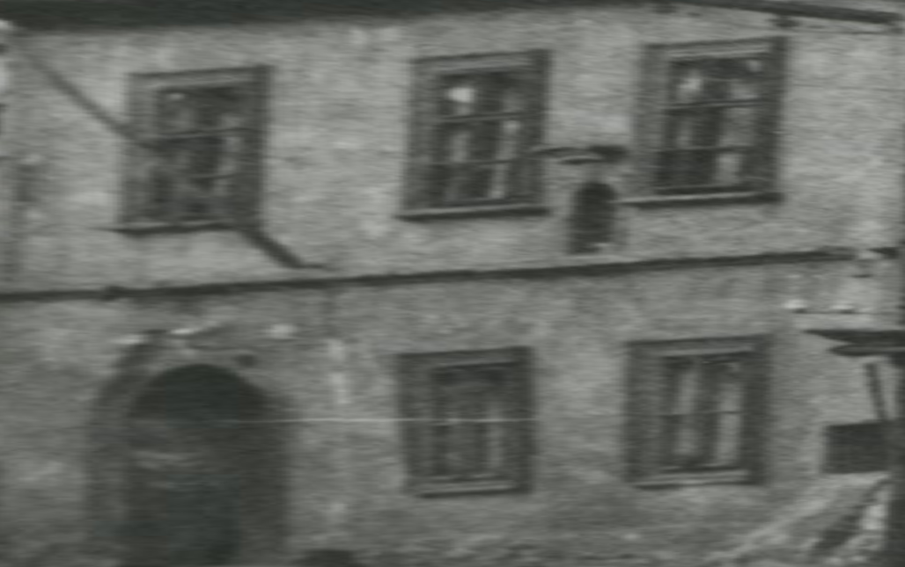
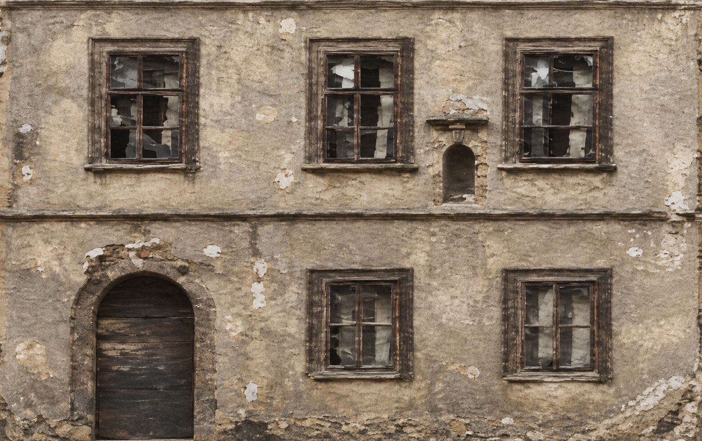
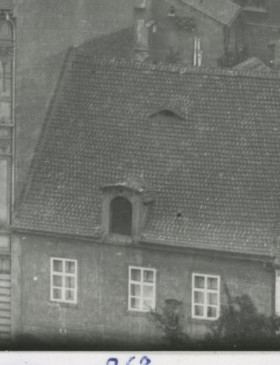
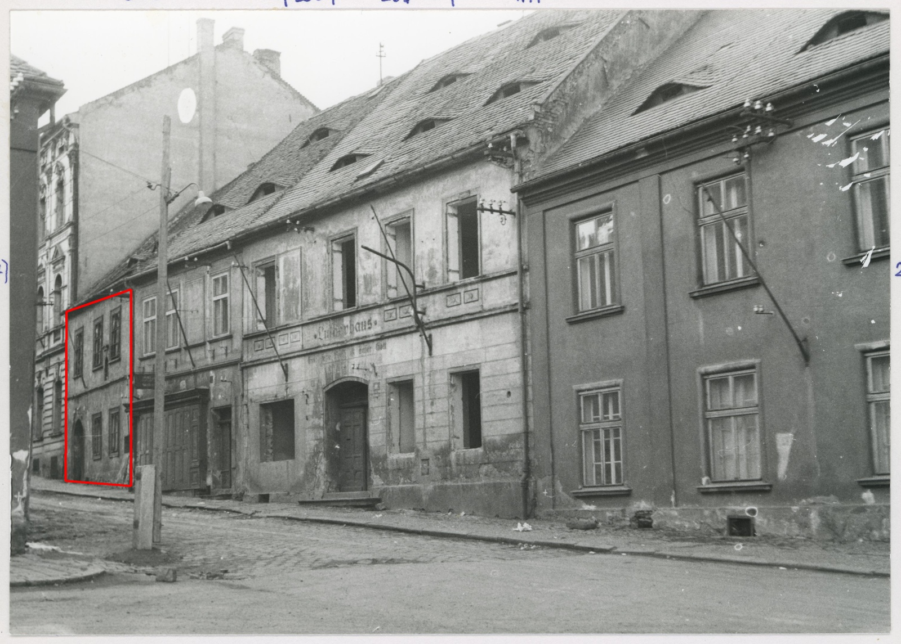
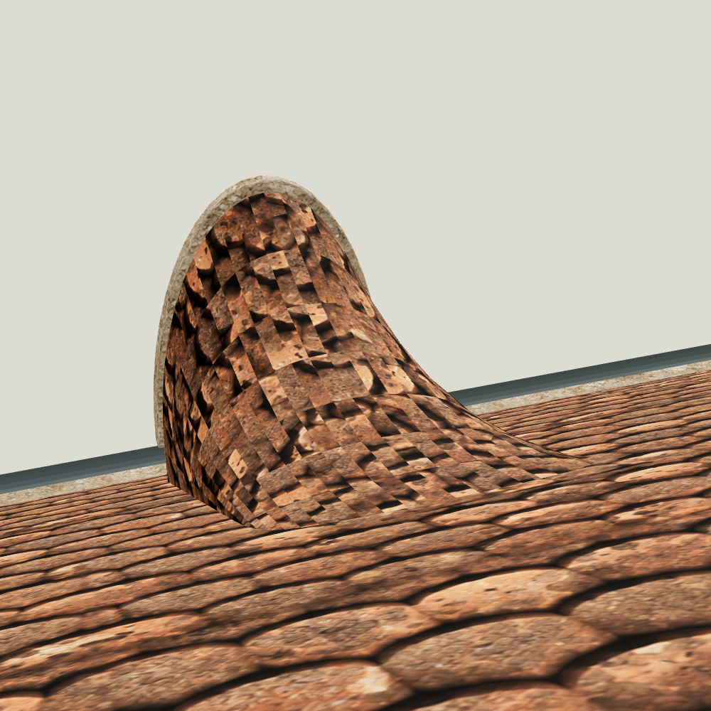
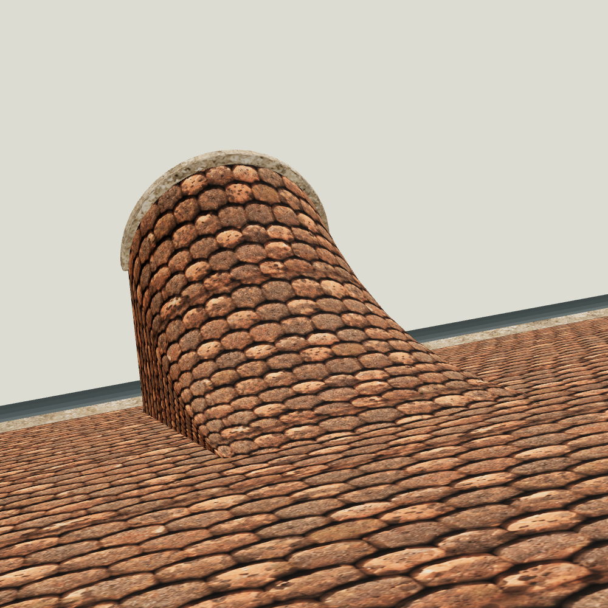
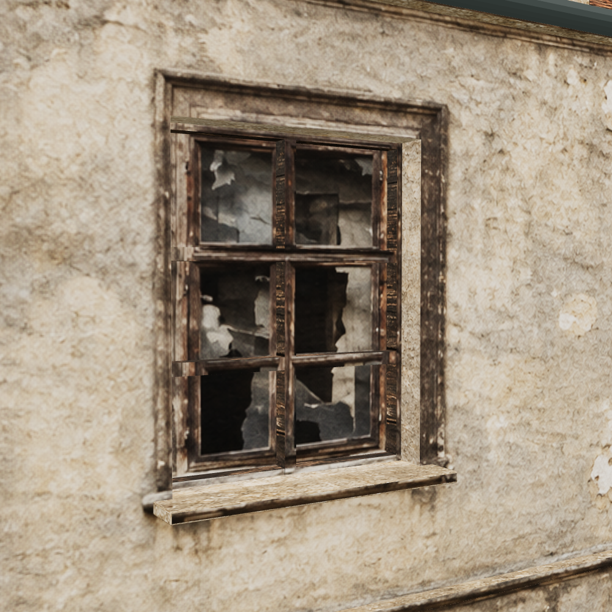
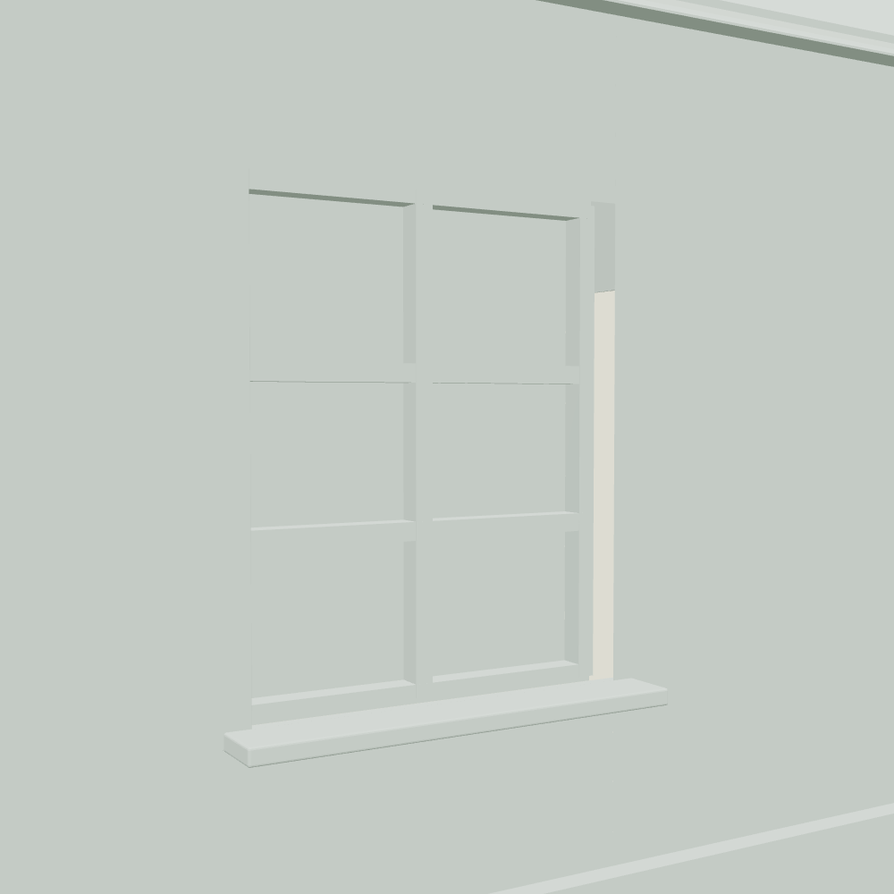
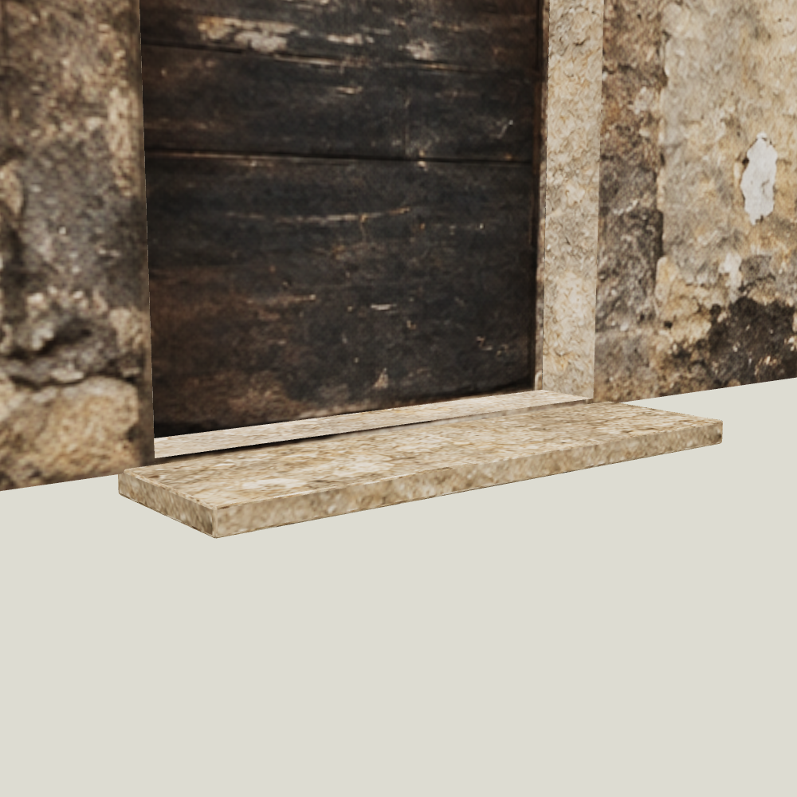
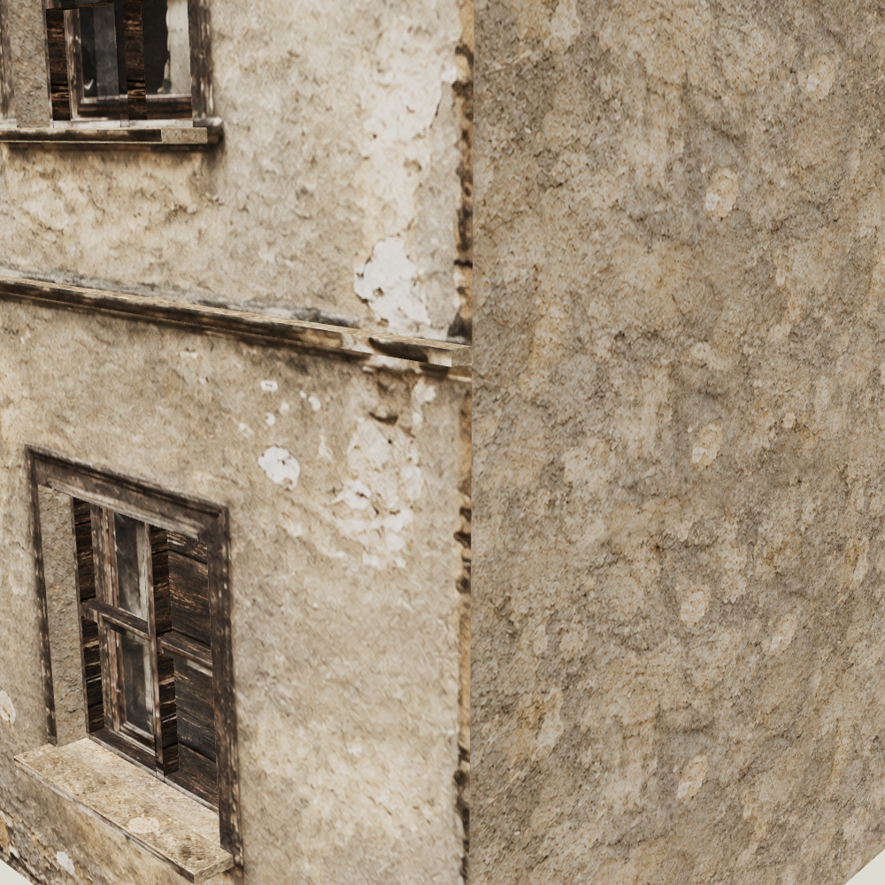

Původní fotografie / barevná pracovní reference
Táhněte posuvníkem. Perspektivně narovnaný ČB podklad má nízké skutečné rozlišení. Barevný obraz doplňuje hypotetický materiálový detail; není novou historickou fotografií.


Podstatný nález: chybně přiřazený FRONT
Starší soubor označený 263 obsahoval jiné průčelí. Původní přehledový snímek a plán ukazují nízký tříosý dům vpravo od vysokého čp. 262. Zamítnutý FRONT ani jeho editace nejsou použity v tomto modelu.


Co model rozlišuje
Pět oken, levý obloukový vstup a nika mají vlastní hloubku. Parapety a ostění používají samostatné materiály. Vstup má mělký pracovní práh; tři schody z čp. 261 se sem nekopírují. Dvojice vikýřů vychází z přehledového snímku; jejich zadní napojení je rekonstruované. Zadní a boční otvory nejsou doložené, proto nejsou vymyšlené.
Zaoblení se týká vybraných hran parapetů a prahu (8 mm) a obloukových profilů (12 mm). Nový model má 10,28 m podle plánu; starší GIS odhad 10,63 m je v dokumentaci veden odděleně.
Kontrola v detailu: co bylo potřeba opravit
Vlevo první neúspěšná kontrola UV, vpravo opravené návaznosti. Stejná kamera odhaluje chyby, které čelní pohled skrývá.


Ostění: textura a skutečná geometrie




Pracovní verze: modelování a kontroly jsou zdokumentované. Historická shoda jemných detailů generované fasády zatím není potvrzená; model není automaticky schválen pro ulici.
Postup, kontroly a náročnost
Zpráva o provedení a omezeních · Vizuální QA · Průběžná měření využití
Údaj využití je procento společného účtového limitu, nikoli přesný počet tokenů této úlohy. Technické načtení modelu samo nepotvrzuje vizuální ani historickou správnost.
Pracovní rekonstrukce / provisional reconstruction. Vizuální kontrola textur není historické schválení domu.